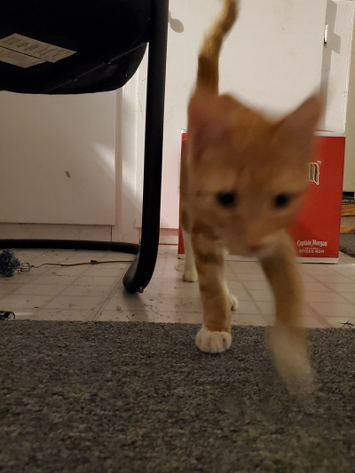
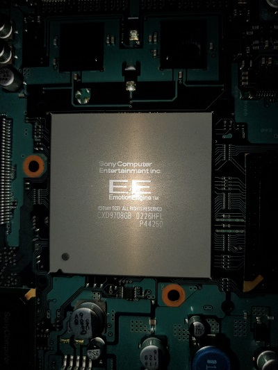

Who am I?
Hewwo. Many people refer to me as the "computer guy." Its no coincidence that its my nickname. Ive been passionate about computer science since Elementay School. It started out with me exploring Windows and creating interactive Batch scripts. My dedication and technical ability has evolved way past what my younger self thought was possible. One thing out of many that I have learned though this journey is there is always more to be learnred, and that this is only the begining. I take that Idea with open arms as its what got me this far.


Skills Include
- C++
- C#
- Python
- Lua
- Haskell
- Linux